Equalizers, IIR and FIR#
Introduction#
Frequency response is the system output level specific to a frequency. It can be measured in acoustical, electrical analog, or digital domain. Standards such as AES17 [1] define how it is measured and reported.
The frequency response between e.g. 20 Hz and 20 kHz, that is typical human max. range, is measured by sweeping signal generator frequency and observing and recording the system output level into a curve.
The speaker frequency responses can rarely be optimized by mechanical and acoustical design in the mass market devices. The industrial design and miniaturization typically limit the performance. The non-flat frequency response is a form of linear distortion. It causes the sound reproduction to be unnatural in a way that could be called thin, dark, etc. Such systematic issues in speaker frequency response can be improved with equalization.
Equalization is a simple technique that creates by signal processing in an open loop pre-defined opposite linear distortion into signal to cancel the linear distortion caused by speaker. However the cancel cannot be perfect since the fixed equalization response need to be in practice common for all production devices. Optimizing for one device could cause another device to fail if the characteristic at that frequency would differ. Hence the equalization can address only systematic issues in the frequency response. Also when applying equalization the system performance is impacted. Equalization nearly always reduces achievable peak sound pressure level (SPL) and reduces system dynamic range (DR). When tuning the equalization the trade-offs need to be considered.
The document describes speaker equalization. Microphones equalization is similar but measurements are done in opposite domain: Acoustical -> digital. In both cases use of calibrated reference microphone is needed.
Preparations#
The device should allow remote ssh without password for the automatic scripts to work. Since the developers have usually their public and private keys setup only this is needed. Find out the IP address from ifconfig command output on your device.
ssh-copy-id -i ~/.ssh/id_rsa.pub user@aa.bb.cc.dd
For ssh to work with low delay the development PC and tuned device should be on the same local IP network. You can check that remote playback works to DUT with example command:
ssh user@aa.bb.cc.dd "aplay -l"
Since the tests are done with low-level ALSA aplay and arecord utilities it is recommended to temporarily rename in DUT the audio servers to disable them. Kill manually the processes or reboot to avoid them continue running. The audio servers can be disabled from OS system control in more elegant way but it is harder to remember how to do it and restore to normal vs. the brute force way.
cd /usr/bin
sudo mv pulseaudio pulseaudio.disabled
sudo mv pipewire pipewire.disabled
Frequency response measurement#
Note: More professional audio analyzer systems are recommended to be used for final tuning. The procedures described in this document are for coarse initial settings. Final tuning, especially if dependence to regulations and standards need to be done with care in professional environment with calibrated measurement equipment.
To measure speakers an omnidirectional USB measurement microphone is recommended, e.g. UMM6 [2] or UMIK-1 [3]. Such microphones are inexpensive and do not necessarily have a flat frequency response but the manufacturers provide a serial number based downloadable calibration file for them. The calibration can be applied to these measurements in SOF as well by referencing the downloaded calibration data to measurement script.
Next step up are analog condenser measurement microphones with a high-end USB sound card that can provide the 48V phantom voltage. But analog microphones add more calibration consideration for analog level. The measurement microphones can be also calibrated for absolute level with dedicated microphone calibrators those can output into the sealed compartment a reference 94 dBSPL tone.
The tools for measurement and EQ design are in located in directory $SOF_WORKSPACE/sof/tools/tune/eq. The test setup is such that the DUT device plays back the measurement wav file via ssh commands and the development PC connected USB microphone captures the output. To achieve this the configuration files for playback and capture need to be edited.
The capture device UMM6 is hw:3.0 (card 3, device 0), this can be seen from output of arecord command on a the development PC example. We also know that this device supports one capture channel.
arecord -l
**** List of CAPTURE Hardware Devices ****
card 0: PCH [HDA Intel PCH], device 0: ALC257 Analog [ALC257 Analog]
Subdevices: 1/1
Subdevice #0: subdevice #0
card 1: Ultra [Fast Track Ultra], device 0: USB Audio [USB Audio]
Subdevices: 1/1
Subdevice #0: subdevice #0
card 2: Audio [ThinkPad Dock USB Audio], device 0: USB Audio [USB Audio]
Subdevices: 1/1
Subdevice #0: subdevice #0
card 3: UMM6 [UMM-6], device 0: USB Audio [USB Audio]
Subdevices: 1/1
Subdevice #0: subdevice #0
The settings file
$ cat mls_rec_config.txt
%% Recording device configuration
rec.ssh = 0; % Set to 1 for remote capture
rec.user = ''; % Set to user@domain for ssh
rec.dir = '/tmp'; % Directory for temporary files
rec.dev = 'hw:3,0'; % Audio capture device
rec.nch = 1; % Number audio capture channels to use
% Use '' if calibration is not needed. Otherwise set to
% e.g. '1234567.txt'. Such calibration data format is supported for
% some reasonably priced measurement microphones. The ASCII text
% calibration data file is the measured frequency response of the used
% microphone. Lines in the beginning those start with character " are
% treated as comment. The successive lines should be <frequency>
% <magnitude> number pairs. Their unit must be Hz and dB.
rec.cal = '';
Similarly check with remote aplay command the playback devices and then edit the playback settings.
ssh user@aa.bb.cc.dd "aplay -l"
**** List of PLAYBACK Hardware Devices ****
card 0: sofglkda7219max [sof-glkda7219max], device 0: Speakers (*) []
Subdevices: 1/1
Subdevice #0: subdevice #0
card 0: sofglkda7219max [sof-glkda7219max], device 1: Headset (*) []
Subdevices: 1/1
Subdevice #0: subdevice #0
card 0: sofglkda7219max [sof-glkda7219max], device 5: HDMI1 (*) []
Subdevices: 1/1
Subdevice #0: subdevice #0
card 0: sofglkda7219max [sof-glkda7219max], device 6: HDMI2 (*) []
Subdevices: 1/1
Subdevice #0: subdevice #0
card 0: sofglkda7219max [sof-glkda7219max], device 7: HDMI3 (*) []
Subdevices: 1/1
Subdevice #0: subdevice #0
On the DUT the speakers are provided by device hw:0,0. It’s known that there’s two playback channels in the device.
$ cat mls_play_config.txt
play.ssh = 1; % Set to use remote ssh commands
play.user = 'user@aa.bb.cc.dd'; % Set user@domain for ssh
play.dir = '/tmp'; % directory for temporary files
play.dev = 'hw:0,0'; % Audio device for playback
play.nch = 2; % Number of playback channels to test
Next the measurement orientation and measurement microphone place is considered. A notebook could be placed on top of a table symmetrically where the measurement microphone location should be symmetrical to display center axis. The microphone location could be near the center of user’s ears. If the measurement microphone capture is too silent or disturbed by ambient noise the microphone should be placed closer into near field.
{kind=link}
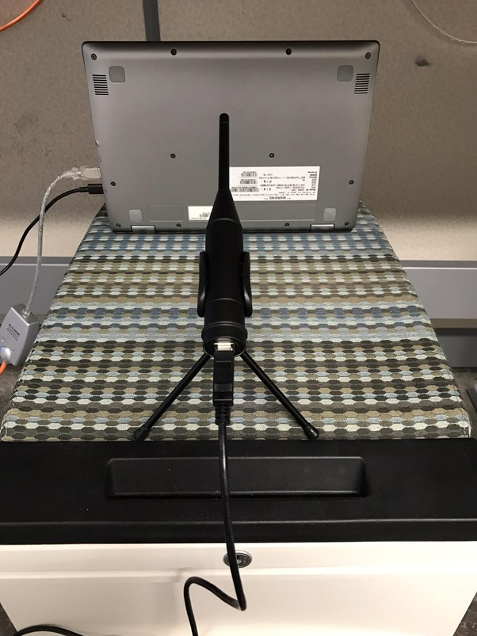
Figure 111 On-axis measurement position for bottom located speakers.#
Since this example device is a convertible type with a near 360 degree display hinge there are several usage orientations. It was chosen to measure the speakers from about their firing axis. Since the response is impacted by orientation this was felt as safest choice. It also gave the flattest looking frequency response.
The MLS measurement tolerates some noise but the more silent the environment is the better it is. An anechoic chamber would be ideal naturally. The used MLS signal sets stress for the speakers so start with a low volume setting with “alsamixer -Dhw:0”. Find the speaker playback volume control PGA or volume controlin speaker amplifier and start with e.g. 50%.
Start Octave and launch the measurement
[f, m] = mls_freq_resp('DUT');
If the script warns about too silent audio increase the volume and/or bring the microphone closer to the device. If the device has small speakers and test signal playback sounds like at being near to their capability limit, it is best to ignore the warning. The speakers may permanently damage if the playback is too loud.
If problems the script contains a self test for quick integrity check. The self test measures a recursive filter that simulates a non-flat response. The measurement and theoretical response that’s computed directly from filter coefficients should match.
[f, m] = mls_freq_resp('selftest');
The test signal contains two chirps and a few times repeated pseudo-random numbers sequence. The chirps are used to locate and extract the MLS part. The MLS sequence has such a characteristic the the correlation with itself is minimal. The sufficient length of the sequence is used to suppress room reverberation from the measurement. It provides nearly similar measured frequency responses as achieved in anechoic conditions. As in anechoic chamber the setup should be as much as possible like free-field. The desk/stand where the device is measured should be away from reflecting surfaces.
This MLS measurement would naturally also benefit from doing in anechoic chamber since the MLS technique cannot eliminate all reverb impact form measurement. Though usually in chambers there’s professional equipment available like Audio Precision ® and other. If such are available this measurement step with SOF can be avoided and continued from next section for data import for tuning.
{kind=link}
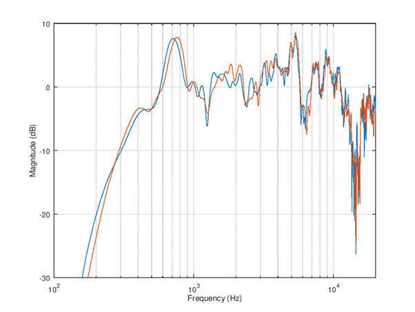
Figure 112 Frequency response measurement. The first channel is aligned to 0 dB at 1 kHz. The second channel is shown with true offset vs. first.#
After a successful measurement a plot with frequency (Hz) and magnitude (dB) as x and y axis will be shown. The variable f will contain the frequency response and variable m the magnitude. If the number of measured channels was larger than 1 the m is a matrix. The result can be saved for equalizer design into a .mat file.
save example_dut.mat f m
Equalizer design#
It can be seen from the picture that the output of speakers is weak at below 200 Hz. There’s two resonances, first at about 700 Hz and second at about 5 kHz (better visible on table orientation). The response is within -10 .. +10 dB in about 300 - 13000 Hz range. The equalization should not be applied outside these frequencies to avoid a large loss of SPL. It can be also seen that the left and right speaker have slightly different frequency response.
Next the measurement data is imported to SOF. It can be done by load of previously saved file or importing e.g. in MS Excel format from other equipment. The matrix columns for frequency and channel specific levels need to be known.
The tool in SOF is a set of functions to be used in user created script. Therefore programming knowledge is needed. The benefit of using script is the procedure is easy to repeat and documented by itself.
FIR equalizer#
The finite impulse response (FIR) filter type has the advantages that design for any finite time impulse response / frequency response is simple and robust. The filters do not oscillate by design so the rounding errors do not appear as noise. The rounding of coefficients into a fixed word length only impairs slightly the response but the effect can be usually ignored. Therefore the FIR equalizers especially when used with 24 and 32 bit audio format are compatible with studio like 24 bit audio quality.
Due finite response (often limited by DSP resources) the FIR filters are not practical for lowest frequencies unless very long filters are used. The longer the filter is the more DSP RAM and MCPS the processing consumes. However FIR filters are great for mid and high frequencies equalization. The next example equalizes those frequencies for the previously done measurement.
The initial script for tuning is shown below. Alternatively for other equipment the data import could be done in Excel format and use function xlsread(); to read a matrix and then extract the frequency and magnitude columns.
%% Load measurement data, variable f and m
load example_dut.mat;
%% EQ settings
eq1 = eq_defaults(); % Get defaults
eq1.fs = 48e3; % Set sample rate
eq1.norm_type = 'loudness'; % Normalize criteria can be loudness/peak/1k
eq1.norm_offs_db = -3; % Offset in dB to normalize, -3dB loudness
eq1.logsmooth_plot = 1.0; % Smooth over 1.0 octaves
eq1.logsmooth_eq = 1.0; % Smooth over 1.0 octaves
eq1.enable_fir = 1; % By default both FIR and IIR disabled
eq1.fir_beta = 3.0; % Lower beta is more accurate but be careful
eq1.fir_length = 90; % Minimize this vs. fmin/fmax choice
eq1.fir_autoband = 0; % Select manually frequency limits
eq1.fmin_fir = 700; % Equalization starts from 800 Hz
eq1.fmax_fir = 13e3; % Equalization ends at 13 kHz
eq1.fir_minph = 1; % Check result carefully if 1 is used, 0 is safe
eq2 = eq1; % Copy settings to second EQ
%% Design left channel EQ
eq1.raw_f = f; % Measurement Hz
eq1.raw_m_db = m(:,1); % Measurement dB, left ch
eq1 = eq_compute(eq1);
eq_plot(eq1, 10);
The run of this script creates these plots. Note the choice of 1.0 octaves smoothing for both plotting and EQ target derivation. It’s best to start carefully with such a high amount of smoothing to avoid to equalize highly uncertain details of frequency response.
The smoothed version of the response becomes very flat in the equalized version. However the simulated raw response still contains a lot of ripple especially at high bands. It’s an industry standard to use ⅓ octaves smoothing since it quite well matches human ear psycho-acoustics. Therefore ⅓ octaves should be the smallest feasible width of octaves smoothing to use.
{kind=link}
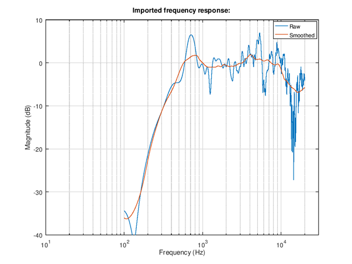
Figure 113 Imported frequency response with and without octaves smoothing. Note that the strong 1.0 octaves wide smoothing “flattens” most of the narrow (high Q) resonances and leaves the two mentioned resonances at 700 Hz and 4 kHz.#
{kind=link}
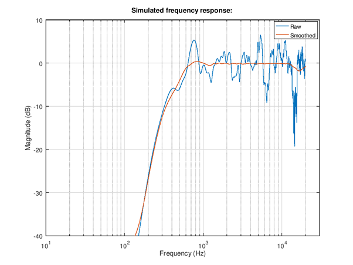
Figure 114 Simulated frequency response after equalization#
{kind=link}
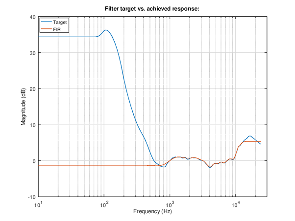
Figure 115 Frequency response of equalizer. The blue curve is the ideal inverse response including the smoothing. The red curve is the band limited and filter design parameters constrained actual EQ response. The y-axis is offset in such way that 1 kHz frequency is shifted to 0 dB. Try the impact of filter length to see how it impacts the accuracy and find a fair compromise.#
{kind=link}
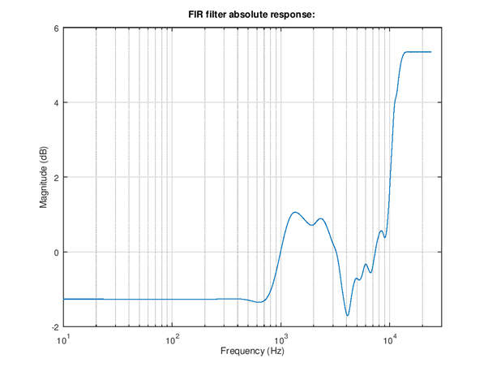
Figure 116 Frequency response of equalizer. This curve shows the absolute gain of the equalization. It can be seen that the normalization of loudness (-3 dB) does some fairly high gain above 10 kHz. The attenuation of frequencies below 200 Hz may or may not be sufficient to give signal headroom for this boost. Need to watch out for distortion in playback, if observed the loudness need to be decreased.#
{kind=link}
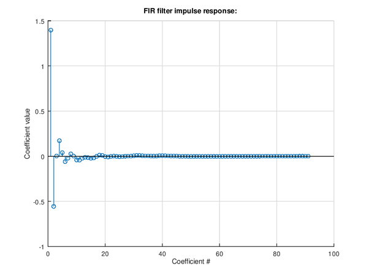
Figure 117 Impulse response of equalizer. The chosen minimum phase non-symmetrical impulse response can be seen in the shape. A linear phase response would have symmetrical pre- and post oscillation in the impulse response.#
Add of right channel measurement import and EQ design is done by adding these lines to above script.
%% Design right channel EQ
eq2.raw_f = f; % Measurement Hz
eq2.raw_m_db = m(:,2); % Measurement dB, right ch
eq2 = eq_compute(eq2);
eq_plot(eq2, 20);
The resulting EQ can be seen from these plots. If the left and right channel results are different need to know if it is due to non-symmetrical mechanics. If there’s designed non-symmetry it’s safe to go ahead and design different EQ for left and right channels. If the hardware is symmetrical then it is likely to better to equalize e.g. average response of left and right instead.
Note: The left and right responses are quite similar. The mechanics & acoustics is likely symmetrical so a common EQ could be the best choice. The average of left and right response could be suitable to use. However in this in this case the design is done as stereo for tutorial purpose.
{kind=link}
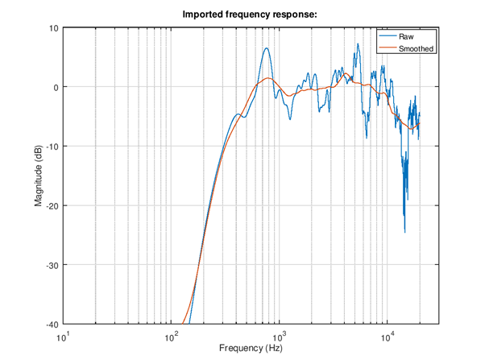
Figure 118 Import right channel frequency response.#
Figure 119 Simulated response of equalizer.#
{kind=link}
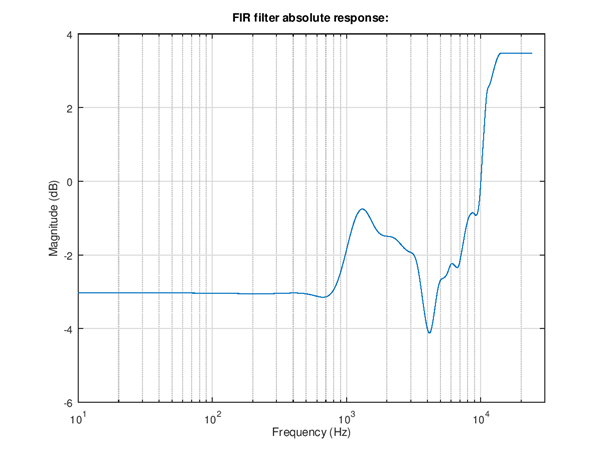
Figure 120 Frequency response of the right channel filter. Notice the difference to left channel filter.#
The next step is to check the stereo EQ design. The left and right channels should as equalized have similar loudness. Since the SOF tool currently does not add much help to multi-channel design this step needs some additional own code.
%% Stereo EQ
figure(30);
l_ch = eq1.m_db+eq1.fir_eq_db;
r_ch = eq2.m_db+eq2.fir_eq_db;
semilogx(eq1.f, l_ch, eq2.f, r_ch);
grid on;
axis([100 20e3 -20 10]);
xlabel('Frequency (Hz)');
ylabel('Magnitude (dB)');
%% Calculate level offset at 1 - 4 kHz from RMS
idx0 = find(eq1.f < 4e3);
idx = find(eq1.f(idx0) > 1e3);
l_lev = 20*log10(sqrt(mean(10.^(l_ch(idx)/10))));
r_lev = 20*log10(sqrt(mean(10.^(r_ch(idx)/10))));
fprintf('L ch level %3.1f dB\n', l_lev);
fprintf('R ch level %3.1f dB\n', r_lev);
delta_lev = l_lev-r_lev;
fprintf('delta %3.1f dB\n', delta_lev);
The plot shows the raw data plus EQ impact. Since the offset is hard to judge from the non-smoothed plot (the smoothed data is unfortunately for this purpose 1 kHz, 0 dB aligned) the offset is computed from RMS level difference in 1 - 4 kHz band. In this example the difference was 0.2 dB. The offset is next added to right channel align.
%% Design right channel EQ
eq2.norm_offs_db = -3 + 0.2; % Offset in dB to normalize, -3dB plus L-R
eq2.raw_f = f; % Measurement Hz
eq2.raw_m_db = m(:,2); % Measurement dB, right ch
eq2 = eq_compute(eq2);
eq_plot(eq2, 20);
{kind=link}
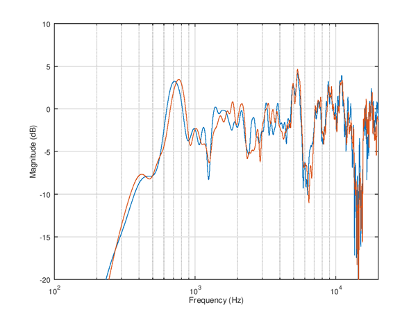
Figure 121 Simulated frequency responses of left and right speaker channels.#
The complete tuning script is shown below for completeness. It can be a starting point for your own stereo speaker equalizer design case!
%% Load measurement data, variable f and m
load example_dut.mat;
%% EQ settings
eq1 = eq_defaults(); % Get defaults
eq1.fs = 48e3; % Set sample rate
eq1.norm_type = 'loudness'; % Normalize criteria can be loudness/peak/1k
eq1.norm_offs_db = -3; % Offset in dB to normalize, -3dB loudness
eq1.logsmooth_plot = 1.0; % Smooth over 1.0 octaves
eq1.logsmooth_eq = 1.0; % Smooth over 1.0 octaves
eq1.enable_fir = 1; % By default both FIR and IIR disabled
eq1.fir_beta = 3.0; % Lower beta is more accurate but be careful
eq1.fir_length = 90; % Minimize this vs. fmin/fmax choice
eq1.fir_autoband = 0; % Select manually frequency limits
eq1.fmin_fir = 700; % Equalization starts from 800 Hz
eq1.fmax_fir = 13e3; % Equalization ends at 20 kHz
eq1.fir_minph = 1; % Check result carefully if 1 is used, 0 is safe
eq2 = eq1; % Copy settings to second EQ
%% Design left channel EQ
eq1.raw_f = f; % Measurement Hz
eq1.raw_m_db = m(:,1); % Measurement dB, left ch
eq1 = eq_compute(eq1);
eq_plot(eq1, 10);
%% Design right channel EQ
eq2.norm_offs_db = -3 + 0.2; % Offset in dB to normalize, -3dB plus L-R
eq2.raw_f = f; % Measurement Hz
eq2.raw_m_db = m(:,2); % Measurement dB, right ch
eq2 = eq_compute(eq2);
eq_plot(eq2, 20);
%% Stereo EQ
figure(30);
l_ch = eq1.m_db+eq1.fir_eq_db;
r_ch = eq2.m_db+eq2.fir_eq_db;
semilogx(eq1.f, l_ch, eq2.f, r_ch);
grid on;
axis([100 20e3 -20 10]);
xlabel('Frequency (Hz)');
ylabel('Magnitude (dB)');
%% Calculate level offset at 1 - 4 kHz from RMS
idx0 = find(eq1.f < 4e3);
idx = find(eq1.f(idx0) > 1e3);
l_lev = 20*log10(sqrt(mean(10.^(l_ch(idx)/10))));
r_lev = 20*log10(sqrt(mean(10.^(r_ch(idx)/10))));
fprintf('L ch level %3.1f dB\n', l_lev);
fprintf('R ch level %3.1f dB\n', r_lev);
delta_lev = l_lev-r_lev;
fprintf('delta %3.1f dB\n', delta_lev);
IIR equalizer#
Infinite impulse response (IIR) filter is the other main filter type for equalization. Here it’s described after FIR because despite the simpler look (much lower filter orders needed) using them needs more expertise. An IIR design can fail fatally if not used with care and plenty of testing. Therefore it is recommended to use simple low order filters and do the more complex response manipulation with FIR. The risks of IIR are in stability (unwanted loud oscillation), noise, and loss of SNR due to scaling need. However IIR filters are great for enhancing frequency response at lowest frequencies and generally doing stronger adjustment.
The tool in SOF does not support automatic design. Instead the design is manual with parametric first and second order blocks. The second order blocks are called often bi-quads. The parametric blocks are specified by their type (high-pass, low-pass, low-shelf, high-shelf, peak/notch). The shelving and peaking filters are second order. The high-pass and low-pass filters can be first or second order. Therefore the parametric blocks are called with abbreviations HP1, HP2, LP1, LP2, LS2, HS2, and PN2. All parametric blocks have a resonant frequency parameter in Hz. The shelving filters and peaking filters have also gain in Decibels as parameter. Finally the peaking filter has a Q-value parameter. The higher the Q-value is the narrower is the resonance. The syntax for describing parametric EQ is shown below:
eq1.peq = [ eq1.PEQ_HP2 200 0 0 ; ...
eq1.PEQ_PN2 750 -5.0 1.3 ; ...
eq1.PEQ_PN2 5000 -4.0 0.6 ; ...
];
The example can be equalized with IIR only. First, since there is very little output from the speaker below 200 Hz we can with second order high-pass suppress the not audible frequencies from output. It increases the headroom for equalization a lot since typical music and speech content has large energy there. Then, a peaking EQ is set to attenuate the 750 Hz region by 5 dB and Q-value 1.3 for flatter response. Finally, a peaking filter is set to attenuate the wide bump at 5 kHz by 4 dB and Q-value 0.6. The resulting EQ is 6th order. It also could be possible to boost the low frequencies at 400 Hz a bit with a low-shelf but it is not done here to keep filter order low. Boost at low frequencies creates risk for signal clipping while the achievable bandwidth extension is not large.
{kind=link}
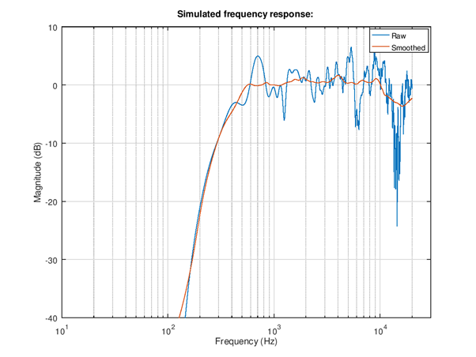
Figure 122 Simulated frequency response. The difference in parametric low-order IIR can be seen as more remaining small ripple in the smoothed equalized response vs. FIR.#
{kind=link}
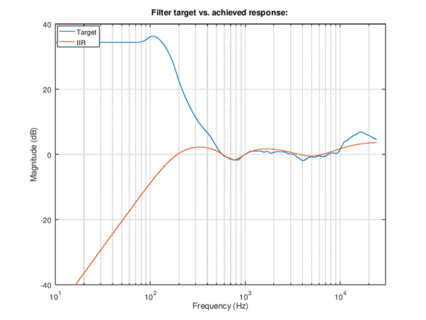
Figure 123 IIR filter response vs. ideal target.#
{kind=link}
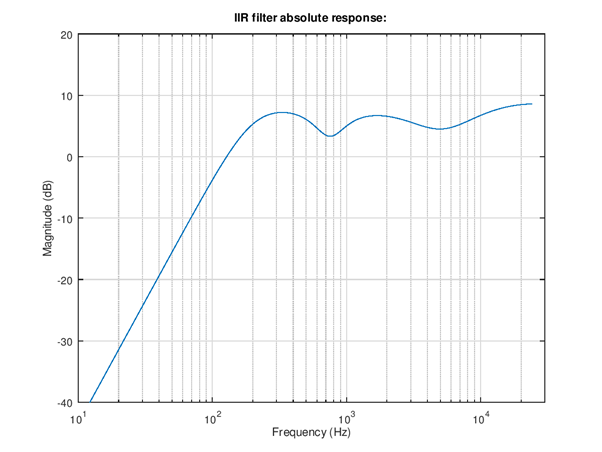
Figure 124 Absolute response. The loudness normalize suggests a fairly high gain for the filter since a lot of loudness is lost due to suppress of lowest frequencies. Need to be careful with this.#
{kind=link}
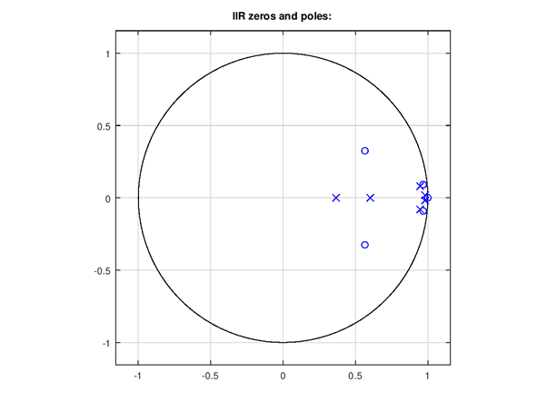
Figure 125 Poles and zeros plot. In recursive filters the poles (x) need to be inside unit circle for stable design. This plot is for 64 bit float coefficients, fixed scaled coefficients could have issues even if this looks OK.#
{kind=link}
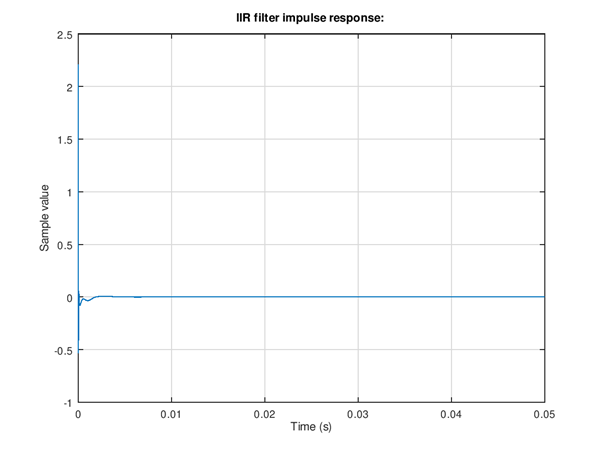
Figure 126 Impulse response. The main purpose of this to do another stability check. A stable filter decays to zero while an unstable design might remain oscillation at steady or increasing amplitude.#
The right channel is tuned similarly. The resulting non-smoothed left/right balance corrected responses and the complete code for tuning are shown below.
{kind=link}
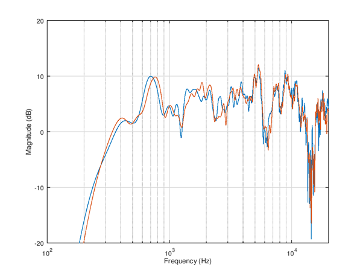
Figure 127 Simulated frequency responses of left and right speakers with IIR equalizer.#
%% Load measurement data, variable f and m
load example_dut.mat;
%% EQ settings
eq1 = eq_defaults(); % Get defaults
eq1.fs = 48e3; % Set sample rate
eq1.norm_type = 'loudness'; % Normalize criteria can be loudness/peak/1k
eq1.norm_offs_db = -3; % Offset in dB to normalize, -3 dB loudness
eq1.logsmooth_plot = 1.0; % Smooth over 1.0 octaves
eq1.logsmooth_eq = 1.0; % Smooth over 1.0 octaves
eq1.enable_iir = 1; % By default both FIR and IIR disabled
eq2 = eq1; % Copy settings to second EQ
%% Design left channel EQ
eq1.raw_f = f; % Measurement Hz
eq1.raw_m_db = m(:,1); % Measurement dB, left ch
eq1.peq = [ eq1.PEQ_HP2 200 0 0 ; ...
eq1.PEQ_PN2 750 -5.0 1.3 ; ...
eq1.PEQ_PN2 5000 -4.0 0.6 ; ...
];
eq1 = eq_compute(eq1);
eq_plot(eq1, 10);
%% Design right channel EQ
eq2.norm_offs_db = -3 + 0.1; % Offset in dB to normalize, -3dB plus L-R
eq2.raw_f = f; % Measurement Hz
eq2.raw_m_db = m(:,2); % Measurement dB, right ch
eq2.peq = [ eq2.PEQ_HP2 200 0 0 ; ...
eq2.PEQ_PN2 750 -5.0 1.4 ; ...
eq2.PEQ_PN2 4500 -4.0 0.6 ; ...
];
eq2 = eq_compute(eq2);
eq_plot(eq2, 20);
%% Stereo EQ
figure(30);
l_ch = eq1.m_db+eq1.iir_eq_db;
r_ch = eq2.m_db+eq2.iir_eq_db;
semilogx(eq1.f, l_ch, eq2.f, r_ch);
grid on;
axis([100 20e3 -20 20]);
xlabel('Frequency (Hz)');
ylabel('Magnitude (dB)');
%% Calculate level offset at 1 - 4 kHz from RMS
idx0 = find(eq1.f < 4e3);
idx = find(eq1.f(idx0) > 1e3);
l_lev = 20*log10(sqrt(mean(10.^(l_ch(idx)/10))));
r_lev = 20*log10(sqrt(mean(10.^(r_ch(idx)/10))));
fprintf('L ch level %3.1f dB\n', l_lev);
fprintf('R ch level %3.1f dB\n', r_lev);
delta_lev = l_lev-r_lev;
fprintf('delta %3.1f dB\n', delta_lev);
Combined IIR and FIR#
The EQ tool can support use of both types simultaneously. The IIR type is applied first and the impact is subtracted from the target. This allows the FIR to fine tune the response where IIR could not match fully the target.
For this example the IIR high shelf is left out because FIR can do it efficiently. Instead of boosting at 2 kHz this script tests attenuation at 700 Hz to flatten and extend a bit the flat frequency response region down.
Note: In current version the norm_offs_db parameter impacts both FIR and IIR part by the given amount. Therefore the level adjust need to be entered as 0.5*adjust.
{kind=link}
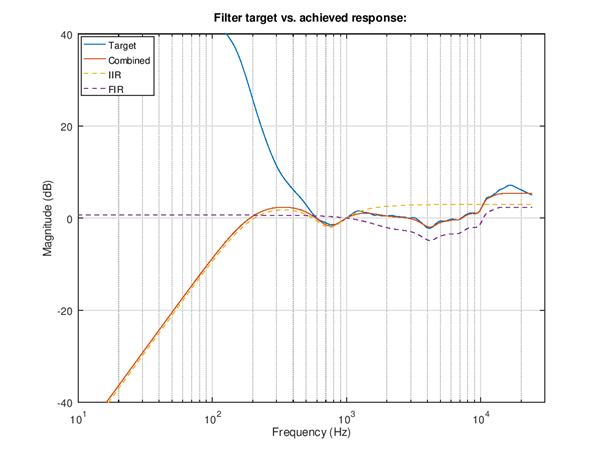
Figure 128 Right channel equalization filters. The red solid plot is the combined IIR and FIR response that matches well the smoothed target response in solid blue. The dashed yellow and purple lines show the IIR and FIR responses.#
{kind=link}
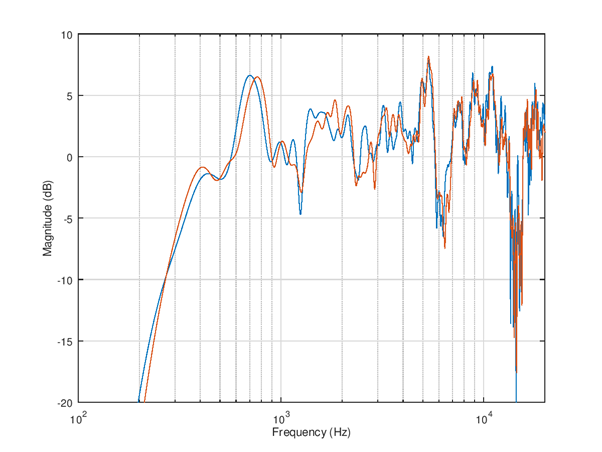
Figure 129 Simulated raw frequency response#
Exporting coefficients to SOF#
The coefficients can be exported into a format for m4 topology for automatic boot time setup. The topology file can include the m4 scripts instead of the default “flat” response coefficients. It is also possible to set up an equalizer with .txt or .bin format blob in device run-time with sof-ctl utility to test the response and iterate the design.
The complete script for equalizers tuning and coefficients export for the previous example is shown below.
%% Load measurement data, variable f and m
load example_dut.mat;
%% EQ settings
eq1 = eq_defaults(); % Get defaults
eq1.fs = 48e3; % Set sample rate
eq1.norm_type = 'loudness'; % Normalize criteria can be loudness/peak/1k
eq1.norm_offs_db = -3; % Offset in dB to normalize, -3dB loudness
eq1.logsmooth_plot = 1.0; % Smooth over 1.0 octaves
eq1.logsmooth_eq = 1.0; % Smooth over 1.0 octaves
eq1.enable_fir = 1; % By default both FIR and IIR disabled
eq1.enable_iir = 1; % Enable too
eq1.fir_beta = 3.0; % Lower beta is more accurate but be careful
eq1.fir_length = 40; % Minimize this vs. fmin/fmax choice
eq1.fir_autoband = 0; % Select manually frequency limits
eq1.fmin_fir = 700; % Equalization starts from 800 Hz
eq1.fmax_fir = 13e3; % Equalization ends at 13 kHz
eq1.fir_minph = 1; % Check result carefully if 1 is used, 0 is safe
eq2 = eq1; % Copy settings to second EQ
%% Design left channel EQ
eq1.raw_f = f; % Measurement Hz
eq1.raw_m_db = m(:,1); % Measurement dB, left ch
eq1.peq = [ eq1.PEQ_HP2 200 0 0 ; ...
eq1.PEQ_PN2 750 -5.0 1.3 ; ...
];
eq1 = eq_compute(eq1);
eq_plot(eq1, 10);
%% Design right channel EQ
eq2.norm_offs_db = -3 + 0.1; % Offset in dB to normalize, -4dB plus L-R
eq2.raw_f = f; % Measurement Hz
eq2.raw_m_db = m(:,2); % Measurement dB, right ch
eq2.peq = [ eq2.PEQ_HP2 200 0 0 ; ...
eq2.PEQ_PN2 750 -5.0 1.4 ; ...
];
eq2 = eq_compute(eq2);
eq_plot(eq2, 20);
%% Stereo EQ
figure(30);
l_ch = eq1.m_db+eq1.tot_eq_db;
r_ch = eq2.m_db+eq2.tot_eq_db;
semilogx(eq1.f, l_ch, eq2.f, r_ch);
grid on;
axis([100 20e3 -20 10]);
xlabel('Frequency (Hz)');
ylabel('Magnitude (dB)');
%% Calculate level offset at 1 - 4 kHz from RMS
idx0 = find(eq1.f < 4e3);
idx = find(eq1.f(idx0) > 1e3);
l_lev = 20*log10(sqrt(mean(10.^(l_ch(idx)/10))));
r_lev = 20*log10(sqrt(mean(10.^(r_ch(idx)/10))));
fprintf('L ch level %3.1f dB\n', l_lev);
fprintf('R ch level %3.1f dB\n', r_lev);
delta_lev = l_lev-r_lev;
fprintf('delta %3.1f dB\n', delta_lev);
%% Export FIR
fir_ascii_fn = 'dut_spk_fir.txt';
fir_tplg_fn = 'dut_spk_fir.m4';
fir_eq1_quant = eq_fir_blob_quant(eq1.b_fir);
fir_eq2_quant = eq_fir_blob_quant(eq2.b_fir);
channels_in_config = 2; % Setup max 2 channels EQ
assign_response = [0 1]; % Switch to response #0 and #1
num_responses = 2; % Two responses
fir_bm = eq_fir_blob_merge(channels_in_config, ...
num_responses, ...
assign_response, ...
[fir_eq1_quant fir_eq2_quant]);
fir_bp = eq_fir_blob_pack(fir_bm);
eq_alsactl_write(fir_ascii_fn, fir_bp);
eq_tplg_write(fir_tplg_fn, fir_bp, 'FIR');
%% Export IIR
iir_ascii_fn = 'dut_spk_iir.txt';
iir_tplg_fn = 'dut_spk_iir.m4';
iir_eq1_quant = eq_iir_blob_quant(eq1.p_z, eq1.p_p, eq1.p_k);
iir_eq2_quant = eq_iir_blob_quant(eq2.p_z, eq2.p_p, eq2.p_k);
iir_bm = eq_iir_blob_merge(channels_in_config, ...
num_responses, ...
assign_response, ...
[iir_eq1_quant iir_eq2_quant]);
iir_bp = eq_iir_blob_pack(iir_bm);
eq_alsactl_write(iir_ascii_fn, iir_bp);
eq_tplg_write(iir_tplg_fn, iir_bp, 'IIR');
Testing the response with sof-ctl#
The sof-ctl tool is practical for testing new EQ settings and iterate the design without need to reboot the device. The pre-requisite is that the DUT runs for speaker path a topology that contains the IIR and FIR equalizers.
First the numids of the equalizers are found out with amixer command. The lines with prompt $ are user entered commands and other text shown is command output.
$ amixer -Dhw:0 controls | grep EQIIR
numid=66,iface=MIXER,name='EQIIR1.0 EQIIR'
$ amixer -Dhw:0 controls | grep EQFIR
numid=67,iface=MIXER,name='EQFIR1.0 EQFIR'
The numids are in this device 66 and 67 for IIR and FIR. Next the exported ALSA binary controls are passed to equalizers with sof-ctl:
$ ./sof-eqctl -n 66 -s dut_spk_iir.txt
Applying configuration "dut_spk_iir.txt" into device hw:0 control numid=66.
4607827,0,196,50331648,0,0,0,0,196,2,2,0,0,0,0,0,1,2,2,0,0,0,0,3260252783,2107733822,
528275171,3238416955,528275171,0,16384,3324016838,2034846530,497901563,3275128193,
526872106,4294967293,20454,2,2,0,0,0,0,3260252783,2107733822,528275171,3238416955,
528275171,0,16384,3317002057,2041827532,500647939,3271629404,527641448,4294967293,20551
Success.
$ ./sof-eqctl -n 67 -s dut_spk_fir.txt
Applying configuration "dut_spk_fir.txt" into device hw:0 control numid=67.
4607827,0,244,50331648,0,0,0,0,244,131074,0,0,0,0,65536,44,0,0,0,0,3801503801,233243489,
4293068324,74908123,1901269,7733144,6422742,4290772934,17039467,1114313,4293328827,
4291756033,4289658785,4291297224,4293459912,589833,4294115318,4294246391,4294442989,
1310731,13,0,44,0,0,0,0,3785054386,221118972,13436579,74515002,8520459,10551247,10944817,
4292018112,23789790,4291559609,4293984167,4288479207,4290576265,4293394406,131047,1179673,
4293853177,4293853167,4294901744,851980,6,0
Success.
{kind=link}
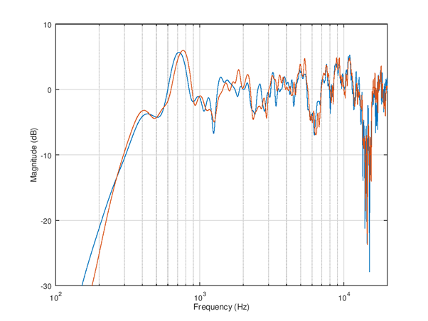
Figure 130 The response is simple to test acoustically by re-running mls_freq_resp(); The overall response is now much more flat and is very similar to previously shown simulated response.#
Using the EQ settings in topology#
The generated .m4 suffix files for FIR and IIR can be included or embedded into topology m4 scripts. There are a few examples of such topologies in $SOF_WORKSPACE/sof/tools/topology/topology1/development. The CMakeLists.txt file builds e.g. topologies sof-cml-rt1011-rt5682-eq.tplg and sof-hda-generic-2ch-loud.tplg those can be used as example.
The playback pipeline is set with -DSPKPROC=eq-iir-eq-fir-volume or -DHSPROC=eq-iir-eq-fir-volume to contain the equalizers and volume control components. The macros -DHSPROC_FILTER1=eq_iir_coef_pass.m4 and -DHSPROC_FILTER2=eq_fir_coef_pass.m4 are flat default responses.
Setting -DHSPROC_FILTER1=dut_spk_iir.m4 and -DHSPROC_FILTER2=dut_spk_fir.m4 would set the just exported equalizer tuning to be applied at device boot.
Note: Unfortunately the SOF topology1 equalizers definitions at top CMakeLists.txt are not very systematic and there may be bugs with some platforms triggered by small topology changes. The new topology needs extensive testing for all audio endpoints (that other existing filters are not modified) and preferably manual inspection of topology .conf file that the m4 parsed output matches expectation.
The development now focuses to to topology2 and hopefully this part can be cleaned up and made easier for product audio tuning.